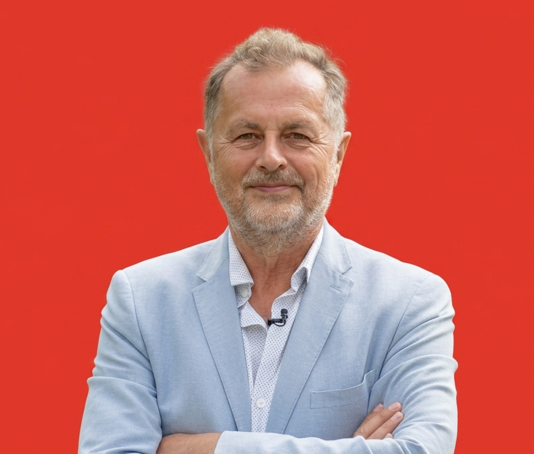
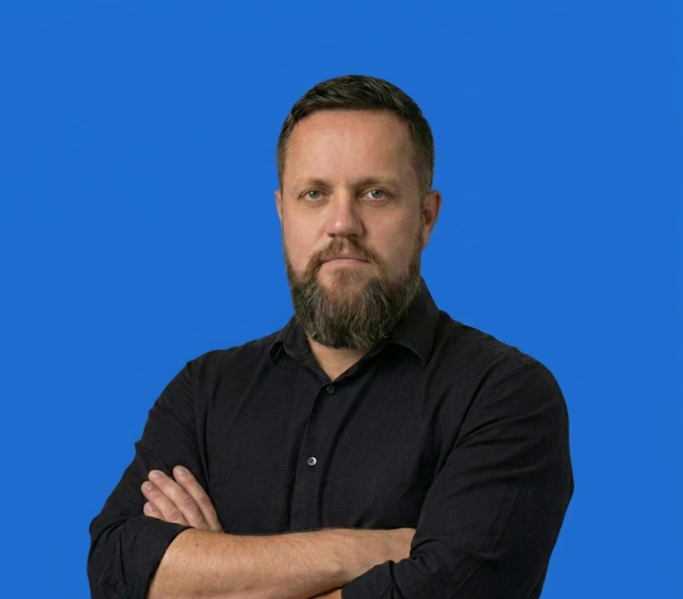

01
Osnivač & autor
Rene Bakalović
Kuhar hobist · Gastronomad · Dobri duh scene
Dobri duh regionalne gastro scene koji tvrdi da je samo kuhar hobist —
a u međuvremenu je bio dio većine važnijih televizijskih kulinarskih showova,
suvodio kuhinju Kod Ane i Gastronomad, suautor je portala Tri Trilje
i pisao je za Dobru Hranu.
Rado viđen gost na svakom OPG-u, vinariji, craft pivovari i restoranu
u koji svrati. Poznat po ležernom, duhovitom i autentičnom stilu pripovijedanja.
Kaže da samo povezuje ljude. Mi znamo da je malo više od toga.
- Suvoditelj — Kuhinja Kod Ane
- Suvoditelj — Gastronomad
- Suautor — Tri Trilje
- Autor — Dobra Hrana
Instagram & TikTok — uskoro

02
Millennial View · Kolumnist
Vlado Stipan
F&B veteran · AI specialist · Konzultant
Dvadeset godina restoranskog managementa na svim razinama —
od vlastitog restorana do multinacionalnih i nacionalnih lanaca.
Zadnjih šest godina kao konzultant, a zadnje dvije implementira
AI rješenja u sustave malih i srednjih poduzetnika.
Na portalu zastupa glas milenijalaca — drugu perspektivu
Reneovom Boomers pogledu na scenu. Jer ista tanjura,
dva potpuno različita kuta gledanja.
- 20 godina F&B managementa
- Vlasnik restorana · Multinacionalni lanci
- 6 godina — F&B konzultant
- AI implementacija za SME — od 2022.